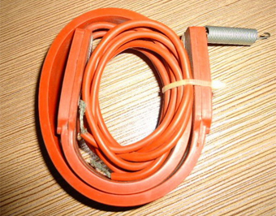

☎ 0216 344 48 19

Krank Isıtıcı 54cm / 70W / 220V (38-48), soğutma/iklimlendirme aksesuarlar yedek parçası. Doğru model eşleşmesi ve hızlı tedarik için ürün kodunu bize iletin; KlimaSun güvencesiyle temin edilir.
| Ürün Kodu | Isıtıcı 54cm / 70W / 220V (38-48) |
|---|---|
| Marka | Krank |
| Alt Kategori | Aksesuarlar |
| Özellik | Krank |
| Temin Durumu | Temin Edilebilir |
Sıfır ürünlerde üretici garantisi; revizyonlu / 2.el ünitelerde ürüne göre 6–12 ay Klimasun garantisi. Kapsam teklifte belirtilir.
Stoktaki ürünler aynı iş günü kargoya verilir; stokta olmayanlar Almanya ve İtalya'dan sipariş üzerine orijinal olarak temin edilir.
2004'ten beri endüstriyel iklimlendirmede Erdinç Klima güvencesi; F-Gaz / EKOMVET yetkinliği, kurumsal e-fatura ve teknik destek.
Bu model için yedek parça ve muadil seçenekleri için kodu bize iletin: Krank ürünleri · muadil ürünler · servis & bakım.
Evet. Krank Isıtıcı 54cm / 70W / 220V (38-48) arızalı ünitelerine bakım, kompresör değişimi, gaz şarjı ve revizyon dahil servis veriyoruz.
Stok durumuna göre sıfır, revizyonlu 2. el veya sipariş üzerine temin edilebilir. Teklif formundan sorabilirsiniz.
Uygun muadil / eşdeğer ürünler için kodu bize iletin; güncel Rittal ve MKS Clima muadilleri önerilir.